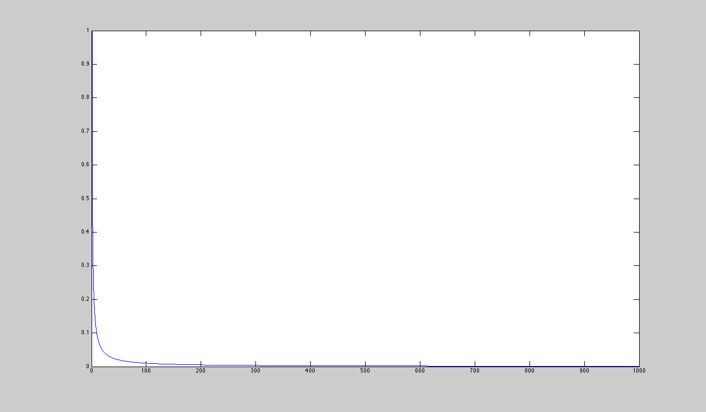

Contents
- User Defined General Paramters
- Initialize Parameter Structures
- Directory path for data
- Set General Analysis Parameters Structure
- Select data files to be analyzed
- Generate File List
- Select file number for analysis
- Time factor for integration
- Parse GenerlaParmaters.txt
- Read timing info from selected *.h5 file
- Spectrum analysis of SRIRx data
% function [SavedData] = HaarpMUIRAnalysis(varargin) %%%%%%%%%%%%%%%%%%%%%%%%%%%%%%%%%%%%%%%%%%%%%%%%%%%%%%%%%%%%%%%%%%%%%%%%%% %%%%%%%%%%%%%%%%%%%%%%%%%%%%%%%%%%%%%%%%%%%%%%%%%%%%%%%%%%%%%%%%%%%%%%%%%%% % % HaarpMUIRAnalysis.m % made by J. Turnquist, GI UAF % much of the code was copied from PlotSNRofHaarpAmisr.m % and associated files, written by S. Oyama % ver.1.0: Jun-24-2008 % ver.1.1: Aug-7-2008 : Added save funcion % ver.1.2: Aug-14-2008: Added NoDisplay feature to enable % HaarpMUIRAnalysis.m to be run on a headless % computer (cluster) % ver.1.2.1: Aug-21-2008: made small fixes % ver.1.2.2: Aug-21-2008: made small fixes to PlotSNRandPSD % ver.1.3: Dec-11-2008: Fixed timing. No longer uses MatlabTime, % now uses RadacTime, time of each individual % pulse. There is a time lag (dropped pulses) % b/t records. % ver.1.3.1: Jan-23-2009: Cleaned up code, added comments. % ver.1.3.2: Jan-29-2009: Added error message for non-existant data % directory % ver.1.3.2: Feb-02-2009: Removed deprecated function % global_HaarpAnalysis % ver.1.3.3: Mar-09-2009: Added new user param: DCKNOB - Down % converter knob selection % Added ablility to save as .fig % %%%%%%%%%%%%%%%%%%%%%%%%%%%%%%%%%%%%%%%%%%%%%%%%%%%%%%%%%%%%%%%%%%%%%%%%%%% %%%%%%%%%%%%%%%%%%%%%%%%%%%%%%%%%%%%%%%%%%%%%%%%%%%%%%%%%%%%%%%%%%%%%%%%%%% %------ % Check number of input variables %------ % if nargin == 2; % Directory4GeneralParamsAsciiFile = varargin{1}; % SelFileNumInput = varargin{2}; % elseif nargin == 1 % Directory4GeneralParamsAsciiFile = varargin{1}; % end
User Defined General Paramters
%------ % set global parameters %------ global NODISPLAY global RUNFROMSCRIPT global SAVEBIT global DCKNOB NODISPLAY = 1; %% 0 : figure visible on %% 1 : figure visible off RUNFROMSCRIPT = 0; %% 1 : Set eqaul to 1 when calling HaarpMUIRAnalysis %% as a function from from a shell script. %% Used when running HaarpMUIRAnalysis on a cluster. %% See shell script for more info. SAVEBIT = 0; %% 1 : Store PSD and SNR data in structure SavedData %% 0 : Do not store data %% Down converter knob selection (MHz) DCKNOB = 445; %% 445 : Ionline %% 450 : Downshifted plasma line %% 440 : Upshifted plamsa line % Note: When running from a shell script, GeneralParameters.txt needs to % be located in the directory containing the data that will be analyzed. % GeneralParamaters.txt contains all the variables that would normally be % inputed at the prompt. A sample GeneralParamaters.txt can be found in % the root dir of HaarpMuirAnalysis.m SaveFigExt = 'jpg'; %% 0 : Do not save figure %% jpg : Save figure as JPG to selected %% directory %% fig : Save figure as FIG %% eps : Save figure as EPS %% tif : Save figure as TIFF %% pdf : Save figure as PDF %% See help print for other data %% formats PulseType = 'uCLP'; %% uCLP : Uncoded Long Pulse %% CLP : Coded Long Pulse
Initialize Parameter Structures
[ InputParam, RadarParam, GenParam ] = func_InitializeStructures;
if ~RUNFROMSCRIPT
Error: At least one END is missing: the statement may begin here.
Directory path for data
NOTE: The directory path for the MUIR data cannot contain spaces when running HaarpMuirAnalysis.m on a windows machince. MATLAB uses the local command line (i.e DOS-prompt in windows). DOS-prompt does not support spaces in directory names and it is not possible to escape the spaces (if I am wrong please let me know). Thus, either place the data in a directory path containing no spaces or use the windows short name convention. 'C:\Documents and Settings' --> 'C:\DOCUME~1' (short name)
On a *nix system it is possible to escape spaces using a
backslash (\).
'/PARS summer school 2007' --> '/PARS\ summer\ school\ 2007'% Directory4MUIRData = ... % 'H:\FebMarch08WinterCampaign\SRIIRxData'; Directory4MUIRData = ... '/Volumes/Dragon-100/Oct2008/SRIRx/' % '/Users/jet/Work/PARS2008/Data/SRIRx/Fallen-Watkins_expt3/' % '/Users/jet/Work/Campain_Oct2008/SRIRx/'; SelectedDateChar = '20081028'; ExpNumberChar = '003'; SaveDirectory = ... '/Volumes/Dragon-100/Oct2008/SRIRx/20081028.003/Analysis/'; % '/Volumes/Dragon-100/Oct2008/SRIRx/20081026.020/Analysis/'; % '/Users/jet/Work/alpha/Pedersen_20081029/SRIRx/Analysis';
Set General Analysis Parameters Structure
InputParam = struct( 'Directory4MUIRData',Directory4MUIRData, ... 'SelectedDateChar', SelectedDateChar, ... 'ExpNumberChar',ExpNumberChar, ... 'SaveFigExt', SaveFigExt, ... 'PulseType',PulseType, ... 'SaveDirectory',SaveDirectory);
Select data files to be analyzed
GenParam.SelectedDirChar = [ InputParam.SelectedDateChar , '.' ... , InputParam.ExpNumberChar ];
Generate File List
[ GenParam status ] = func_MakeFileNameArr(InputParam, GenParam); if status < 0, return, end
Select file number for analysis
[ GenParam ] = func_SelectFileNumber4Ana(GenParam);
Time factor for integration
[ GenParam ] = func_SelectAnalysisParameters(GenParam, RadarParam);
else
Parse GenerlaParmaters.txt
%%%---------- %%% Set Paramaters from text file GeneralParamaters.txt %%%---------- [ InputParam, status ] = func_InputGeneralAnalysisParameters( ... Directory4GeneralParamsAsciiFile ... , InputParam); if InputParam.DataFileNumbers < 0 InputParam.DataFileNumbers = SelFileNumInput; end if status < 0; return; end %% Select data files to be analyzed GenParam.SelectedDirChar = [ InputParam.SelectedDateChar , '.' ... , InputParam.ExpNumberChar ]; %% Generate File List [ GenParam ] = func_MakeFileNameArr(InputParam, GenParam); Fit = []; for ii = 1:1:length(InputParam.DataFileNumbers) Fit(ii) = find( GenParam.DataFileNumberArr == ... InputParam.DataFileNumbers(ii) ); end GenParam.SelectedFileNames = GenParam.FileNameArr(Fit); GenParam.SelectedFileNumbers = GenParam.DataFileNumberArr(Fit); GenParam.Factor4IntTime = InputParam.Factor4IntTime; GenParam.LowerHeight = InputParam.LowerRange; GenParam.UpperHeight = InputParam.UpperRange; end%% if ~RunFromScript
Read timing info from selected *.h5 file
[ RadarParam status] = func_ReadExpSetupFile_hdf5(... InputParam, RadarParam, GenParam); if status < 0, return, end
Spectrum analysis of SRIRx data
[ SavedData ] = func_SpectrumAna4SRIRx(GenParam, InputParam, RadarParam);